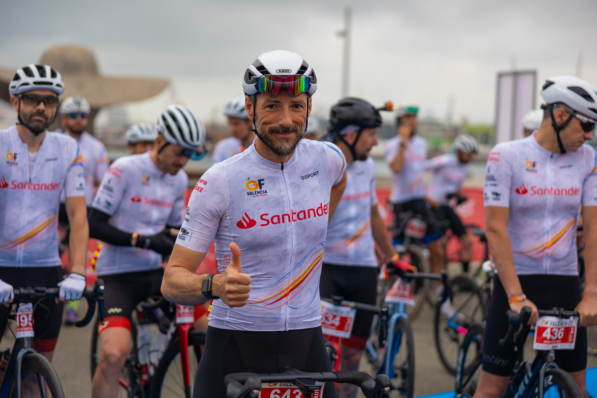
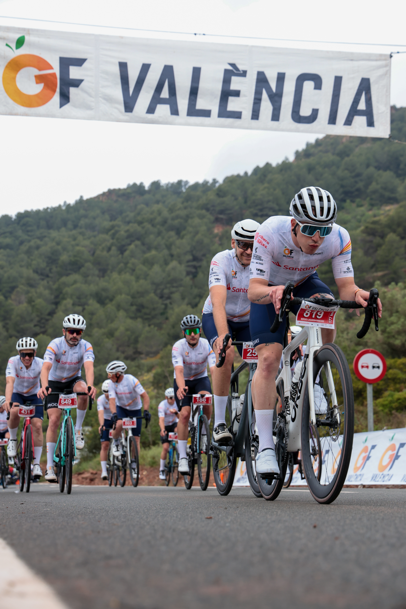

The Gran Fondo Internacional Marcha Ciudad València returned to La Marina de València for its 21st edition on Saturday 2 May 2026, starting and finishing at Tinglado 2, with event coverage by the Image Media team. More than 2,600 cyclists from 24 countries and 36 Spanish provinces took part, riding a route that passed through 28 municipalities across the Comunitat Valenciana.
Riders chose between two distances: a 177-kilometre Gran Fondo route with 2,033 metres of elevation gain, and a 148-kilometre Medio Fondo route with 1,474 metres of climbing. Both shared a series of notable ascents, including Canteras, l'Oronet (up to 11% gradient), Alto Segart (up to 22%) and Chirivilla (up to 8%). As a mass-participation cyclosportive rather than a competitive race, the event does not publish individual finishing results.

The event, directed by Javier Castellar of Club Deportivo Podium, mobilised more than 1,100 security and logistics personnel and 250 Motoenlaces motorcycles, with support from the Guardia Civil, the Generalitat Valenciana, the Diputación de Valencia and local police across the 28 municipalities on the route. Tour de France winner Pedro Delgado served as the event's cycling ambassador.

The event partnered with Fundación CRIS contra el Cáncer, directing proceeds from solidarity jersey sales toward cancer research and paediatric cancer programmes. Alongside the ride, La Marina de València hosted the Expo-Ciclismo trade show, live music and gastronomy stands, with organisers estimating an economic impact of around €3 million for the region.
The Image Media coverage team comprised Eduardo Castro, Luis Moreira, Paulo Nomade, Eduardo Almeida, Lucas Araújo, Luan Rodrigo, Sérgio Mendes, José Ramón Moreno and Fran Paulino.